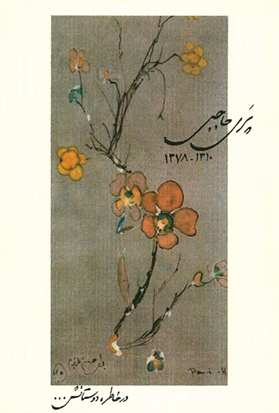
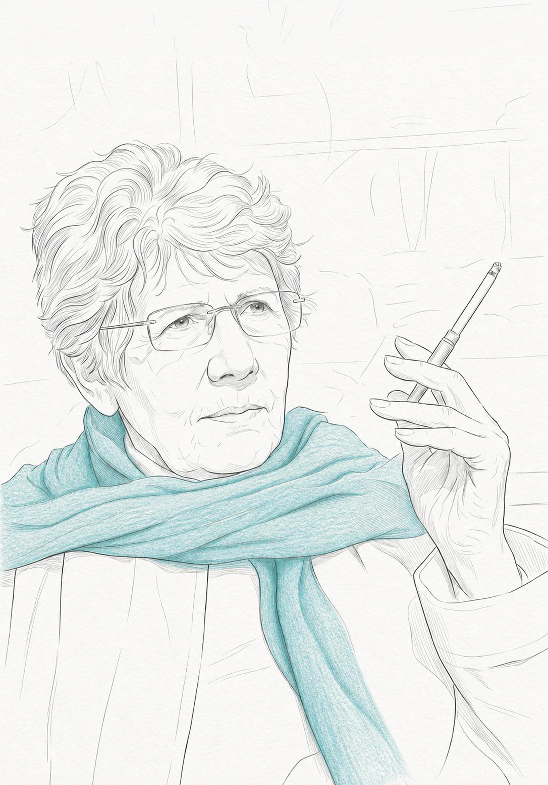
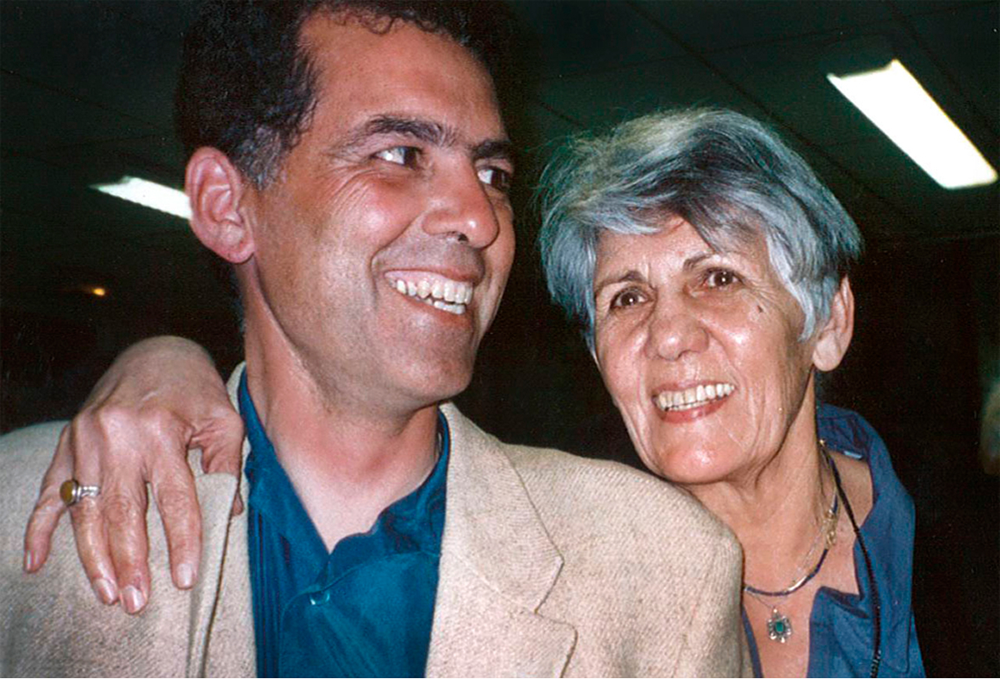
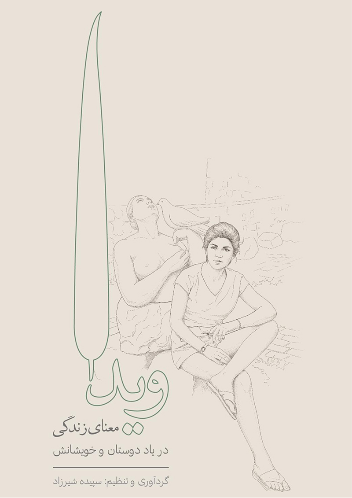
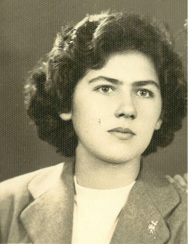
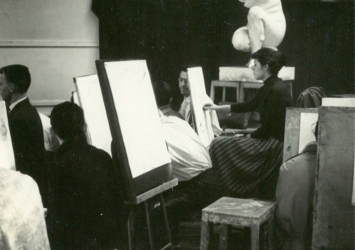
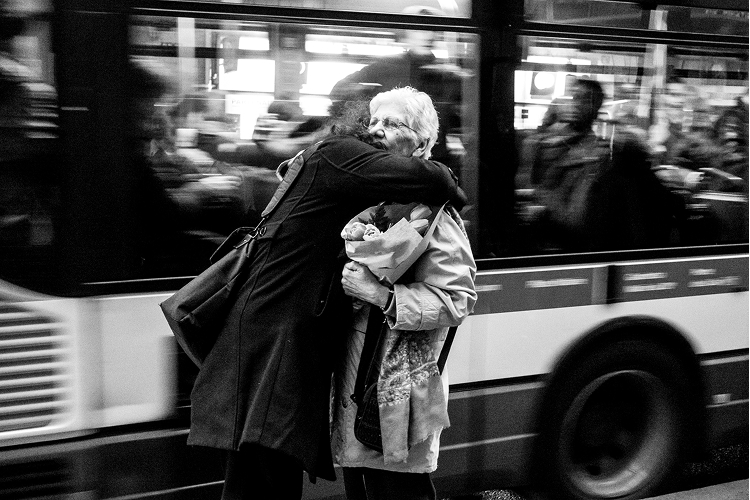
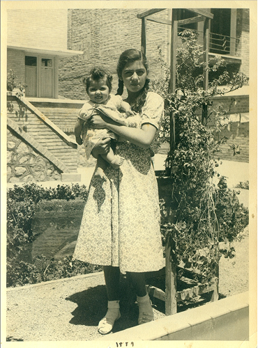
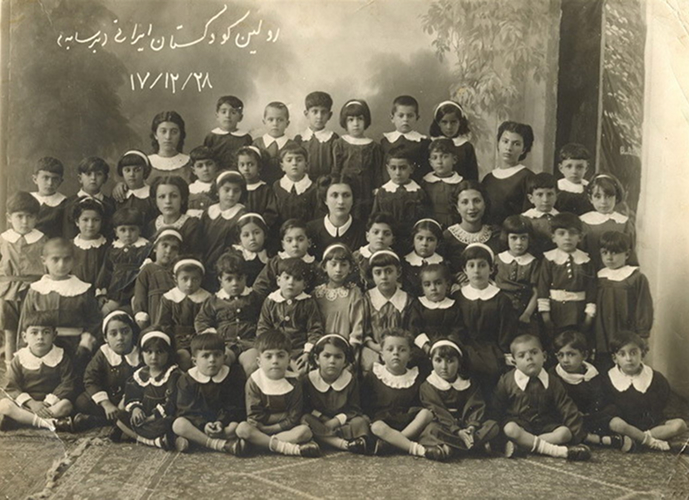
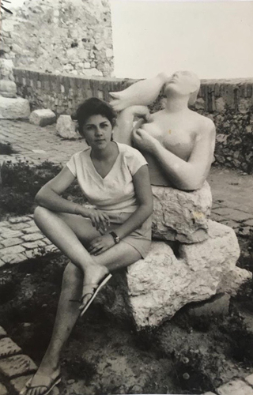

ویدا حاجبی (۱۳۱۵–۱۳۸۶) نویسنده و فعال سیاسی ایرانی است که با نگاهی مستقل و انتقادی، تجربههای خود از مبارزه و زندان را در آثارش روایت کرده است. او از همان ابتدا روحیهای سرکش و پرسشگر داشت؛ در قالبها نمیگنجید و بهسادگی تن به چارچوبهای از پیش تعیینشده نمیداد. بهعنوان زن، نه در نقشِ ایثارگرِ کلاسیک تعریف شد و نه در چهارچوبهای از پیشساخته آرام گرفت. در عین حال، در دل این سرکشی به ظرافتهای زندگی نیز وفادار ماند. این روحیهی نقد و جستوجو، و پایبندیاش به شناخت تاریخ، در آثارش جلوهای روشن پیدا کرد—بهویژه در داد بیداد، که به پلی برای صداهای گوناگونِ زنان از تجربهی زندان بدل شد. او از بازنگری در اندیشههای خود هراسی نداشت؛ پیوسته در مسیرِ شناخت، خود را از نو میساخت و جهان را دوباره میفهمید. از محمد مصدق تا فیدل کاسترو، از کوچههای تهران تا پاریس، پراگ، کوبا و الجزیره، زندگی و نگاه او در پیوندی میان تاریخ و تجربه شکل گرفت. در کتاب یادها ویدا روایت زندگی خویش را باز میگوید؛ روایتی که در عین شخصی بودن بخشی از تاریخ یک دوران است. ویدا نه در پی قهرمانسازی بود و نه خود را قهرمان میخواست؛ سادگی را ارج مینهاد.
بیوگرافیترجمهها و مقالات
رامین - بخشی از جانم
رامین برای من فقط پسرم نیست؛ بخشی از جان و ادامه راهیست که با تمام سختیها پیمودهام. او در میان روزهایی بزرگ شد که زندگی همیشه آسان نبود، اما تلاش کردم یاد بگیرد که حتی در تاریکترین لحظهها هم میشود انسان ماند و امیدوار بود. در نگاهش همیشه جستوجویی میبینم که برایم آشناست؛ همان میل به فهمیدن، به پرسیدن و به تسلیم نشدن. اگر چیزی از من به او رسیده باشد، امیدوارم همین باشد: شجاعت برای زیستن با صداقت و ایمان به اینکه هر انسان میتواند جهان خودش را تغییر دهد.

مصاحبهها و ویدیوها
-
به عبارت دیگر: گفتگو با ویدا حاجبی
متن یا تعبیه ویدئو در این بخش قرار میگیرد.
-
نقد از تهران تا قاهره در نگاه ویدا حاجبی
در اینکه فیلم مستند از تهران تا قاهره مورد استقبال جوانان قرار گرفت، شکی نیست؛ ویدا حاجبی فعال سیاسی-اجتماعی و مهمان آن برنامه پاسخهای پر مغزی به سؤالات داد. اما این فیلم تا اینکه این فیلم تا حد مطلوب فاصله داشت. در اینکه از حد قابل قبولی فاصله دارد در پاریس، از این پس از موفقیتهای دانشجویان پاریسی را به تشریع تاریخ آن دوره میپردازد و این بار راوی نیستم زنده. این کتاب اطلاعات و آن کتاب ها وقتی ندارد. این کتاب ها حاوی خاطرات ویدا حاجبی است که شامل دورههای مختلف تاریخی است.
-
ارجنامه ویدا حاجبی تبریزی: به احترام شهامت در نقد گذشته خود
-
ویدا حاجبی تبریزی: پشیمان نیستم!
-
بازتاب تاریخ از نگاه فرج دیبا
-
ویدا حاجبی تبریزی از فمینیسم و حقوق زنان سخن میگوید
ویدا - معنای زندگی
در این کتاب، ویدا و جنبههای گوناگون زندگیاش را از نگاه دوستان و نزدیکانش روایت میکنیم. امیدوارم این کتاب بتواند تصویری چندوجهی از ویدا به خواننده بدهد؛ تصویری از زنی که قهرمانسازی را زیر سؤال میبرد. زنی که میتوانست از بیرون به خود نگاه کند و بی هیچ ملاحظهای گذشتهاش را نقد کند؛ چراکه در جستجوی شناخت بود: شناختِ خود و شناختِ دیگری.
دانلود کتاب
گالری تصاویر
عکسهای بیشتر




